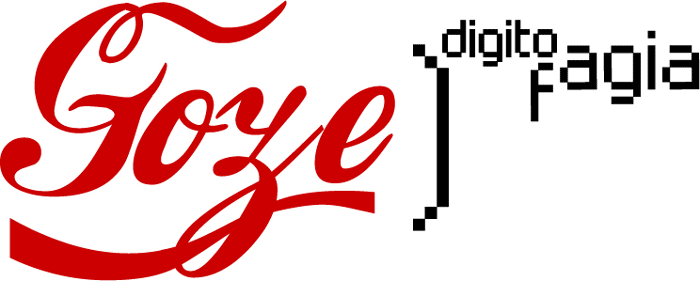

_2003
Mídia Tática Brasil
Mídia Tática Brasil foi um festival realizado na Casa das Rosas em 2003 reunindo dezenas de grupos e milhares de pessoas. Em espaços como o TeleCentro de Cidade Tiradentes, Fundação Japão, Sesc e Casa das Rosas, o encontro tomou as ruas e o espectro sonoro da cidade com a rádio Pega Eu! e seus sons pós-mídia. Extensão do encontro internacional The Next Five Minutes (N5M) que popularizou o conceito de mídias táticas através das experiências de rádios livres, blogs, publicações independentes, arte-ciência, ciberfeminismo e videoativismo de todo o mundo.
[+] The Brazilian Context, Ricardo Rosas / Tactical Media Files
_2004/2005
Autolabs

Laboratórios para produção de mídias táticas. Três experiências de auto-construção de laboratórios de mídia reciclado, todo em software livre, produzindo rádio, notícias independentes, histórias de vida em formatos digitais, fanzines, etc. Desenvolvido durante 6 meses em Cidade Tiradentes, São Miguel Paulista e Ermelino Matarazzo, zona leste de São Paulo para cerca de trezentos jovens do Programa Bolsa Trabalho. A experiência foi um protótipo importante para a iniciativa governamental dos Pontos de Cultura.
[+] Guia de navegação, publicação produzida durante evento FindETático / SESC-SP
Festival Digitofagia

Encontro ocorrido em novembro de 2004, em São Paulo e Rio de Janeiro, em espaços como o MIS - Museu da Imagem e do Som e ip: // lab de mídia carioca, criado no mesmo ano. Um festival de 11 dias totalmente colaborativo, organizado de forma aberta por lista de discussão e um sistema wiki agregando propostas emergentes. Com uma vasta programação e ações iminentes, propôs uma teoria seminal de apropriação tecnológica tanto em seu formato organizativo como em propostas e conteúdo, condizente com os movimento de arte críticos e suas interfaces com o software livre e a mídia tática.
[+] Só a Digitofagia no une, por Cícero Inácio da Silva
_2005/2006
Plataforma Waag Sarai
Encontro internacional entre coletivos da Ìndia, Holanda e Brasil que atuavam nas áreas de comunicação crítica, arte e tecnologia e proporcionou a realização de encontros e publicações, trocas e residências.
IP://
Com diferentes dinâmicas e formações ao longo do tempo, desde 2004 no Rio de Janeiro, o IP:// já esteve na Lapa, Mangueira, Morro do Turano, Morro da Conceição e Tabajaras (Estradinha). Lab de mídia com conexões em movimentos como metareciclagem, rádio livre, gênero e tecnologia, luta por moradia, cartografias afetivas etc este meta-coletivo criou e ajudou a fortalecer processos e zonas autônomas de convivência e colaboração entre diferentes coletivos, movimentos e pessoas.
[+]Interfaces Públicas
_2005/2008
Net_cultura 1.0: DIGITOFAGIA

Coletânea sobre cultura digital e eletrônica brasileira organizado a partir dos assuntos que surgiram durante o Festival Digitofagia, Net_Cultura 1.0 foca-se em diferentes aspectos da cultura eletrônica brasileira popular que cresce quase invisível por todo o país, pautando-se em retratá-la de uma forma inédita, sob um ângulo inesperado, seja por contribuições de produtores, artistas, programadores, teóricos, agentes culturais, ativistas, escritores ou o público em geral.
[+] http://www.comumlab.org/selo/NetCultura_Digitofagia.pdf
_2005/2009
Submidiologia
a arte de re:volver o logos do conhecimento pelas práticas e desorientar as práticas pela imersão no sub-conhecimento. Na prática se constituíram em 4 encontros independentes em Campinas (2005), Olinda (2006), Lençóis (2007) e Belém (2009), além de uma série de 3 eventos subsequentes em um Quilombo no Maranhão, na Aldeia Pataxó na Bahia e em Valadares, no sul do Brasil.
[+] Tactical Media, the Second Decade - Geert Lovinck
[+] http://submidialogia.org/
_2013
Tecnoxamanismo
A rede de tecnoxamanismo é composta por pessoas interessadas em cultura DIY, artistas, indígenas, ativistas indigenistas, hackers, produtores, pesquisadores, permacultores, entre outros, e funciona online, através de uma lista de e-mails, grupo no facebook e por encontros presenciais produzidos em diversos contextos e países, como Brasil, Equador, Dinamarca e Alemanha. Os projetos que se conectam a ela passam a somar em sua significação e conceituação. Esses encontros buscam juntar a rede de forma presencial, realizar rituais DIY partindo do conceito de cosmogonia livre e possibilitar que novas questões surjam a partir do compartilhamento entre pessoas com diferentes pontos de vista.
[+] https://tecnoxamanismo.wordpress.com
_ARQUIVOS
Desvio 2_ Das jornadas de junho e as ocupações, compreendendo as publicações e mobilizações sociais que marcaram comunidades em rede, as cartografias afetivas, tecnomagias, protestos de rua e black blocs.
[+]publicações relacionadas